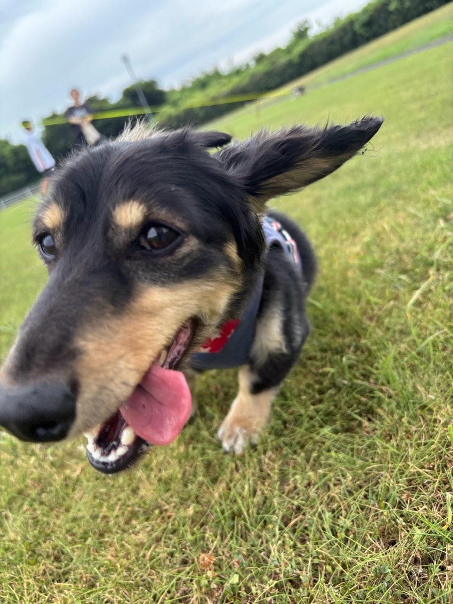

ラム・フィースト
主食／総合栄養食公式上の特徴：ラムを使うフリーズドライの主食候補。
合いやすい悩み：牛・鶏を避けて別の動物性原料を検討したい、少量で食いつきを確認したい。
口コミ傾向：食いつき、ふやかしやすさ、旅行への携帯性が挙がる一方、継続費用の高さも指摘。
犬種情報：公式な犬種指定はなし。口コミにはチワワ、トイプードル、柴犬、ジャックラッセルの使用例。犬種より原材料・体重・予算で判断。
ラムを避ける犬、療法食中は候補外。
散歩、旅行、ごはん。必要な場面と確認ポイントを先に見て、合うものだけ選べます。

用途別セレクション
ランキングではありません。公式情報と商品表示を基に、比較しやすい候補をまとめています。
K9 NATURAL 選び方ガイド
公式上の特徴：ラムを使うフリーズドライの主食候補。
合いやすい悩み：牛・鶏を避けて別の動物性原料を検討したい、少量で食いつきを確認したい。
口コミ傾向：食いつき、ふやかしやすさ、旅行への携帯性が挙がる一方、継続費用の高さも指摘。
犬種情報：公式な犬種指定はなし。口コミにはチワワ、トイプードル、柴犬、ジャックラッセルの使用例。犬種より原材料・体重・予算で判断。
ラムを避ける犬、療法食中は候補外。
公式上の特徴：ビーフを使うフリーズドライの主食候補。
合いやすい悩み：食べムラがあり、牛由来原料を問題なく食べられる犬の主食比較。
口コミ傾向：食いつきを評価する声が多いが、合わない例や価格負担もある。体調変化は個別体験で効果保証ではない。
犬種情報：公式な犬種指定はなし。トイプードル、ポメラニアン、チワワ、シニア犬の使用例。
牛由来原料を避ける犬、脂質・カロリー制限中は成分確認。
公式上の特徴：ラムとキングサーモンを主原料に含む。魚だけの単一たんぱく商品ではない。
合いやすい悩み：肉と魚を含む主食候補を比較したい。
口コミ傾向：ローテーション候補、食いつきに関する声がある。魚由来原料だけを求める用途には不適合。
犬種情報：公式な犬種指定はなし。犬種名よりラム・魚・卵など全原材料の適合で判断。
ラム、魚、卵など該当原料を避けている犬。
公式上の特徴：ラムの胃袋100％。主食ではなく、食事へのトッピングや間食向け。
合いやすい悩み：食が細い、いつものフードへの少量トッピングを試したい。
口コミ傾向：強い匂い、崩しやすさ、少量トッピングでの食いつきが多く語られる。匂いを負担に感じる飼い主もいる。
犬種情報：公式な犬種指定はなし。トイプードル、ポメラニアン、ボーダーコリーの使用例。
ラムを避ける犬、脂質制限中、主食の代用を探している場合。
公式上の特徴：牛の胃袋100％。ラム版より脂質・カロリーが高い商品表示。
合いやすい悩み：牛由来原料を食べられ、少量のトッピングや携帯おやつを比較したい。
口コミ傾向：ラムとのローテーション、食いつき、散歩用おやつとしての使用例。好みは個体差がある。
犬種情報：公式な犬種指定はなし。年齢・犬種より牛への適合と総摂取カロリーで判断。
牛由来原料を避ける犬、体重・脂質管理中。
「下痢が治る」「この種類なら必ず合う」とは判断できません。急な切替を避け、症状が続く場合は獣医師へ。根拠：K9Natural取扱商品情報、K9ナチュラル公式案内

袋に入れて結ぶだけ。散歩、車移動、宿泊時の排泄物処理に使いやすい。
【2個セット】 うんちが臭わない袋 BOS (ボス) ペット | 水色 SSサイズ 200枚×2個 | 日本製
犬の大きさと処理物に合う袋サイズを確認。防臭は完全保証ではありません。
レビューは使用例として確認し、仕様・原材料は商品表示を優先しています。
楽天市場で現在の情報を見る
ペットボトルに装着し、給水皿とおしっこ跡の洗浄を切り替えやすい2WAY。
犬 水飲み シャワー 給水器 ペットボトル装着するだけ 散歩 水入れ おしっこ ペット 送料無料 犬用 ハンディ シャワー M リッチェル お出かけ 水飲み 水 給水ボトル 水トイレエチケット ウォーターボトル お出掛け 携帯水筒 散歩こぼれない ユウランプ ギフト 敬老の日
対応するペットボトル、犬の大きさ、容量を確認。
レビューは使用例として確認し、仕様・原材料は商品表示を優先しています。
楽天市場で現在の情報を見る
散歩や旅行後の足・体をその場で拭きやすい。厚さ、枚数、香料の有無で比較。
【お得なクーポン配布中】ペット用ウェットティッシュ 犬 猫 大判 厚手 ノンアルコール 無香料 詰替用150枚 万能ウェットタオル 足拭き 体拭き 消臭 除菌 国産 日本製 ウェットシート クリンポイ PEPPY
用途、成分、対象部位を確認。目や口の周りは商品表示に従ってください。
レビューは使用例として確認し、仕様・原材料は商品表示を優先しています。
楽天市場で現在の情報を見る
吸収量、サイズ、枚数を選べる宿泊時の基本用品。普段使う銘柄を持参しやすい。
【4,480円→SALE 3,980円｜19日10:00～24日9:59】Famy ペットシーツ JPPMA認証 うす型 薄型 1回使い切り レギュラー 800枚/ ワイド 400枚/ スーパーワイド 204枚 厚型 3回吸収 レギュラー 400枚/ ワイド 200枚/ スーパーワイド 104枚 ペットシート トイレシート 犬 猫 W消臭
犬の排尿量、トレー寸法、宿のルールに合うサイズを確認。
レビューは使用例として確認し、仕様・原材料は商品表示を優先しています。
楽天市場で現在の情報を見る
車内、宿、キャンプでトイレ位置を決めやすい。折りたたみ寸法と防水性が比較軸。
シリコントイレマット 犬 トイレトレー 60×40cm 洗える 防水 滑り止め フチあり はみ出し防止 丸洗い可能 柔らか素材 食事 ランチョンマット 折りたたみ 旅行 帰省 小型犬 中型犬 肉球 おしゃれ エサ台
シーツ固定方法、使用時寸法、収納時寸法を確認。
レビューは使用例として確認し、仕様・原材料は商品表示を優先しています。
楽天市場で現在の情報を見る
後部座席の泥、毛、よだれ対策。防水、滑り止め、開口部、洗いやすさで比較。
【楽天1位】大型犬もOk！PETTENA ペット用 ドライブシート 犬 車 シート マット ペット ボード入り ドライブベッド 全車種対応 防水 滑止め 傷つきにくい 取り付け簡単 掃除しやすい 後部座席 車保護 カーシートカバー GW 母の日
車種、座席寸法、シートベルト穴、飛び出し防止器具との併用を確認。
レビューは使用例として確認し、仕様・原材料は商品表示を優先しています。
楽天市場で現在の情報を見る
片手で給水しやすく、残水を戻せる商品もある。容量、漏れにくさ、洗いやすさが比較軸。
【2個以上で5%OFF】【INULABO(イヌラボ)】 ペット ウォーターボトル 犬 水筒 給水ボトル 給水器 ウォーターボトル 犬 散歩 お散歩グッズ 漏れ防止 ワンタッチ 日用品 熱中症対策 550ml - 300ml
飲み口の大きさ、容量、ロック方法を確認。
レビューは使用例として確認し、仕様・原材料は商品表示を優先しています。
楽天市場で現在の情報を見る
宿や車内の休憩場所に敷きやすい。素材、洗濯方法、滑り止め、サイズで比較。
＼ シーズン終盤★お得な2枚セット登場！／ 瞬間冷却 ひんやりマット 冷感敷きパッド シングル 30×40cm 90×90cm 4.2kg 90×140cm 6.6kg クールマット 体圧分散 接触冷感 冷感寝具 ジェルマット夏用快 猫犬 抗菌防ダニ 涼感マット 涼感寝具
熱中症を防ぐ保証はありません。気温管理、給水、休憩を優先してください。
レビューは使用例として確認し、仕様・原材料は商品表示を優先しています。
楽天市場で現在の情報を見る
フリーズドライタイプ。主食かトリーツか、原材料、戻し方、給与量を商品単位で確認しやすい。
★エントリーでP9倍以上★【ケーナインナチュラル】K9ナチュラル フリーズドライ ラム・グリーントライプ 200g【15時までの注文で当日発送 正規品 フリーズドライフード 犬用】
お腹の不調を治す商品ではありません。切替は少量から行い、体調不良時は獣医師へ。
レビューは使用例として確認し、仕様・原材料は商品表示を優先しています。
楽天市場で現在の情報を見る
原材料数が少ない商品は比較しやすい。携帯性、割りやすさ、カロリーも確認。
ひとくちサーモン 30g◆北海道産 犬 おやつ 無添加 国産 犬猫のおやつシズカ sizuka エゾマルシェ ドッグフード ペット 好き 手作り 鮭 ジャーキー 鮭 ノーズワーク 知育玩具
無添加の範囲を表示で確認。間食は主食量と総カロリーを調整してください。
レビューは使用例として確認し、仕様・原材料は商品表示を優先しています。
楽天市場で現在の情報を見る
ブラシ付きカップで足先を包んで洗うタイプ。雨上がりや土のドッグラン後に使いやすい。
犬 足洗い カップ&ブラシ JABLLA ジャブラ 【新色登場】 特許取得 高級シリコン ブラシ 柔らかい 簡単 足洗い お散歩 ペット グッズ 散歩 携帯 泥汚れ 清潔 肉球ケア シャワーブラシ 小型犬 中型犬 対応 犬用 猫 シリコンブラシ メディア紹介 NHK テレ東
足の大きさ、ブラシの硬さ、分解して洗えるかを確認。嫌がる犬には無理に使わないでください。
レビューは使用例として確認し、仕様・原材料は商品表示を優先しています。
楽天市場で現在の情報を見る
処理袋を収納するケースやポーチ。密閉方法、取り付け方、洗いやすさで比較。
BITE ME バイトミー ビション プーバッグマナーポーチ(犬 散歩 お出かけ マナーポーチ マナー袋ポーチ マナー袋ケース お散歩 散歩グッズ おしゃれ かわいい 携帯 持ち運び コンパクト プーバッグ うんち袋 うんちバッグ ゴミ袋 ストラップ付き POOP BAG トリーツポーチ)
防臭性能と完全密閉は同じではありません。袋との併用方法を確認。
レビューは使用例として確認し、仕様・原材料は商品表示を優先しています。
楽天市場で現在の情報を見る
移動時の囲われた居場所として使えるハードタイプ。扉、持ち手、車載固定、犬の姿勢で比較。
リッチェル キャンピングキャリー ダブルドア ファイン ファインR S 犬 猫 キャリーケース ペットキャリー ハードキャリー クレート 小型犬 超小型犬 お出かけ 通院 車 ドライブ シートベルト固定 ハウス 防災 避難 レビュープレゼント
犬が立つ・向きを変える・伏せるための内寸、耐荷重、車での固定方法を確認。
レビューは使用例として確認し、仕様・原材料は商品表示を優先しています。
楽天市場で現在の情報を見る
ハーネスと車体側をつなぐ補助用品。長さ調整、金具、車側の適合を比較。
＼全商品ポイント5倍／ ペット用シートベルト ペット用 シートベルト 犬 猫 車 ドライブ お出かけ 飛び出し防止 落下防止 簡単取付 散歩 リード 後部座席 車内 家 外出 安全 安心 4色 飛び出し防止 いぬ ねこ おすすめ 人気 小型犬 大型犬 中型犬
首輪だけには接続せず、商品表示と車両適合を確認。衝突安全性能は個別商品の試験情報を確認。
レビューは使用例として確認し、仕様・原材料は商品表示を優先しています。
楽天市場で現在の情報を見る
散歩、ドライブ、宿泊で水や食事を与えやすい折りたたみ式。容量、深さ、洗いやすさで比較。
＼最大500円OFFクーポン配布中／【BITE ME バイトミー ポータブル折りたたみボウル】犬 折りたたみ ボウル 犬 水飲み ボウル 携帯用 シリコン フードボウル コンパクト カラビナ付き 散歩用 旅行用 軽量 小型犬 中型犬 韓国ブランド 全8色
素材、耐熱温度、食品接触用途、犬の口の大きさを確認。
レビューは使用例として確認し、仕様・原材料は商品表示を優先しています。
楽天市場で現在の情報を見る
被毛や腹側の泥はねを減らし、帰宅後の手入れ時間を抑えやすい。
犬用レインコート 可愛いチェック柄 犬 レインコート ドッグウェア 雨具 犬服 小型犬 中型犬 いぬ フード付き防水 着せやすい カッパ ポンチョ 合羽 防水 梅雨 着脱簡単 マジックテープ ポリエステル素材 可愛い ペット 軽量 サイズ豊富 リード穴 送料無料 yp rm
首回り、胸回り、着丈、排泄部分、反射材、蒸れやすさを確認。完全防水は商品表示を優先。
レビューは使用例として確認し、仕様・原材料は商品表示を優先しています。
楽天市場で現在の情報を見る
舐める行動に使うマット。吸盤、溝の深さ、洗いやすさ、食品接触用途を比べやすい。
ペット 早食い防止皿 リックマット【メール便 送料無料】 舐める なめる リックパッド 犬 早食い防止 シリコン 食器 早食い 吸盤 お風呂 シャワー 入浴サポート 小型犬 猫 クリスマス 思い出 おうち時間 sat
誤飲を防ぐため見守って使用し、噛み癖のある犬には破損がないか確認。
レビューは使用例として確認し、仕様・原材料は商品表示を優先しています。
楽天市場で現在の情報を見る
持ち運べる休憩場所。収納寸法、洗濯方法、底面の滑り止め、犬の体格で比較。
＼レビュー1600件超／ ドライブベッド ドライブボックス 犬 車 シート ペット 洗える 獣医師推奨 耐荷重15kg 多頭飼い 2匹 伸縮リード2本付 滑り止め付 厚手ふかふか クッション 肩掛け 2way 助手席 後部座席 軽自動車対応 小型犬 中型犬 旅行 お出かけ
宿の持込ルールと設置場所を確認。慣れた匂いのタオルも役立ちます。
レビューは使用例として確認し、仕様・原材料は商品表示を優先しています。
楽天市場で現在の情報を見る
足先や被毛の水分を拭き取りやすい用品。吸水性、乾きやすさ、サイズ、洗濯方法で比較。
マラソン期間限定ポイント3倍【圧倒的高評価4.75!】ペット タオル 吸水 吸水タオル 超吸水 速乾 ペット用 犬 猫 バスタオル シャワー シャンプー マイクロファイバー 体拭き ドライヤー 時間短縮 5カラー 60cmx115cm クリスマス プレゼント
強くこすらず、皮膚や耳の状態を確認しながら使ってください。
レビューは使用例として確認し、仕様・原材料は商品表示を優先しています。
楽天市場で現在の情報を見る
段差を小さくする補助用品。耐荷重、踏面、滑り止め、車高、収納寸法が比較軸。
【楽天1位】スロープ 犬 ペットスロープ ペットステップ 2つ折り ペット用スロープ 階段 ペット用 踏み台 ドッグスロープ ドッグステップ 犬用 ゆるやか 折りたたみ 屋外 車用 ステップ ペット用階段 クッション 段差 犬用階段 小型犬 老犬 1年保証 ■[送料無料]
飛び降りを完全に防ぐものではありません。設置中は犬を支え、商品耐荷重を確認。
レビューは使用例として確認し、仕様・原材料は商品表示を優先しています。
楽天市場で現在の情報を見る
座面のずれや姿勢の不安定さを抑える補助用品。固定方法、側面、洗濯、車両寸法で比較。
【予約9月25日順次発送】【新色追加/まとめ買い対象】【ご愛顧SALE】小型犬 犬用 ベッド 車 お出かけ アウトドア 撥水 防災 手洗いOK 洗える ペットドライブ用品 コーデュラ交換OK/返品不可コーデュラドライブベッド M 〜7Kg (飛び出し防止フック1本付)
衝突安全を保証する用品ではありません。車載固定とハーネスの説明を確認。
レビューは使用例として確認し、仕様・原材料は商品表示を優先しています。
楽天市場で現在の情報を見る
凹凸で食べる速度を調整する食器。溝の形、洗いやすさ、素材、鼻の長さで比較。
【食事時間が3倍に】ペット 早食い防止食器 フードボウル 早食い防止 食器 衛生的 滑り止め ダイエット こぼれにくい 省スペース 丸飲み防止 犬 早食い 小型犬 中型犬 大型犬 餌入れ エサ入れ 丸洗い 熱湯消毒可能 胃捻転 消化不良 ダイエット 肥満防止 嘔吐防止 迷路
むせや嘔吐が続く場合は用品だけで判断せず獣医師へ相談してください。
レビューは使用例として確認し、仕様・原材料は商品表示を優先しています。
楽天市場で現在の情報を見る
ごほうび、袋、小物を分けて携帯。片手での開閉、洗いやすさ、装着方法で比較。
【まとめ買い対象】犬 小型犬 犬用 マナーポーチ 消臭機能付き うんち袋 お散歩用品 ウンチ処理袋 トリーツポーチ PVC 交換OK/返品不可 メール便可マナーポーチ
食品を直接入れられるか、排泄物用品と分離できるかを確認。
レビューは使用例として確認し、仕様・原材料は商品表示を優先しています。
楽天市場で現在の情報を見る
首輪やハーネスに連絡先を付ける補助用品。文字の読みやすさ、耐水性、重さで比較。
迷子札 犬 タグ ネコ お名前シール ペット 名入れ ドッグタグ 災害グッズ おなまえシール 災害対策 犬用 猫用 ペットタグ 防災 迷子防止 名札 首輪 イヌ ペット用品 日本製 ノンアイロン 迷子札 猫 迷子札 軽量 迷子 ペット ネームタグ プレゼント ギフト グッズ 贈り物
個人情報の表示範囲を決め、鑑札・マイクロチップ登録情報も最新にしてください。
レビューは使用例として確認し、仕様・原材料は商品表示を優先しています。
楽天市場で現在の情報を見る
牛の胃袋100％の栄養補助食。主食ではなく、いつもの食事へのトッピングや間食として量を調整。
★エントリーでP9倍以上★【ケーナインナチュラル】K9ナチュラル フリーズドライ ビーフ・グリーントライプ 250g【15時までの注文で当日発送 正規品 フリーズドライフード 犬用】
ラム版より脂質・カロリーが高い商品表示です。体重管理や脂質制限中は成分値を確認し、必要なら獣医師へ。
レビューは使用例として確認し、仕様・原材料は商品表示を優先しています。
楽天市場で現在の情報を見る
ラムを使った総合栄養食。まず少量サイズで食いつき、便、体重、切替時の変化を記録しやすい。
★エントリーでP9倍以上★【ケーナインナチュラル】K9ナチュラル フリーズドライ ラム・フィースト 500g【15時までの注文で当日発送 正規品 フリーズドライフード 犬用 成犬 老犬 子犬】
グリーントライプやトリーツとは用途が異なります。給与量と戻し方は商品表示を優先。
レビューは使用例として確認し、仕様・原材料は商品表示を優先しています。
楽天市場で現在の情報を見る
ビーフを使った総合栄養食。ラムとの違いは体質への適合を断定せず、原材料と成分値で比較。
★エントリーでP9倍以上★【ケーナインナチュラル】K9ナチュラル フリーズドライ ビーフ・フィースト 500g【15時までの注文で当日発送 正規品 フリーズドライフード 犬用 成犬 老犬 子犬】
特定たんぱく質を避けている場合は全原材料を確認。療法食の代用にはしないでください。
レビューは使用例として確認し、仕様・原材料は商品表示を優先しています。
楽天市場で現在の情報を見る
ラムとキングサーモンを主原料にした総合栄養食。魚由来原料を含む候補として比較できる。
★エントリーでP9倍以上★【ケーナインナチュラル】K9ナチュラル フリーズドライ ラム＆キングサーモン・フィースト 500g【15時までの注文で当日発送 正規品 フリーズドライフード 犬用 成犬 老犬 子犬】
魚だけの単一たんぱく商品ではありません。アレルギーが疑われる場合は自己判断で試し続けないでください。
レビューは使用例として確認し、仕様・原材料は商品表示を優先しています。
楽天市場で現在の情報を見る
原材料はチーズ。星型の小粒で、トレーニング時の少量ごほうびに分けやすい。
犬 おやつ 無添加 国産 Bon rupa ( ボンルパ )「京」 星のちーずさま 30g 犬用 猫用 トリーツ おやつ チーズ 猫 犬 犬おやつ かわいい
間食用です。脂質42.7％以上・537kcal/100gの商品表示のため、乳製品を避ける犬や体重管理中は量に注意。喉詰まり防止のため見守って与えてください。
レビューは使用例として確認し、仕様・原材料は商品表示を優先しています。
楽天市場で現在の情報を見る
約1.5cmの角切り鮭。魚素材の小粒おやつとして、サイズと与える個数を管理しやすい。
【公式】ドッグツリー 角切りミニ 鮭(さけ) S 15g | 無添加 国産 サケ 犬 おやつ 犬のおやつ 犬おやつ 犬用おやつ ドッグフード DOGTREE
間食用です。魚を避ける犬には与えず、骨や硬さ、原材料、給与量を商品表示で確認。
レビューは使用例として確認し、仕様・原材料は商品表示を優先しています。
楽天市場で現在の情報を見る
生のささみを主原料に、天然食材から栄養を摂る設計の国産・無添加ドッグフード。
【お試しサイズ】ドッグツリー ささみと25種類のこだわり具材 50g / 馬肉と25種類のこだわり具材 / かつおと26種類のこだわり具材 50g | 無添加 国産 ドッグツリー ドッグフード ささみ 馬肉 かつお 生肉 グルテンフリー 緑イ貝 DOGTREE
主食として使う場合は総合栄養食表示、給与量、全原材料、鶏への適合を現品で確認。
レビューは使用例として確認し、仕様・原材料は商品表示を優先しています。
楽天市場で現在の情報を見る
生の馬肉を主原料にした国産・無添加ドッグフード。動物性原料を変えて比較したい時の候補。
＼ マラソン期間ポイント10倍！ ／【 50g ／ 600g ／ 1.8kg(600g×3袋) 】馬肉と25種類のこだわり具材【 犬 おやつ 国産 無添加 ドッグツリー DOGTREE 高品質 健康サポート 厳選具材 バランス 】食材本来の旨みと栄養素が摂れるドッグフードです。
馬肉以外の原材料も含みます。避けたい原料、保証成分、給与量を確認。
レビューは使用例として確認し、仕様・原材料は商品表示を優先しています。
楽天市場で現在の情報を見る
かつおを主原料とする肉不使用の国産・無添加ドッグフード。魚主体の候補を比べたい時に。
＼ マラソン期間ポイント10倍！ ／【 50g / 600g / 1.8kg(600g×3袋) 】カツオと26種類のこだわり具材 犬 ドッグフード 無添加 国産 ドッグツリー おやつ 犬エサ 犬のごはん 無添加ドッグフード カツオ 国産ドックフード 無添加犬ごはん DOGTREE 高品質
魚以外の全原材料、総合栄養食表示、保証成分を確認。療法食の代用にはしないでください。
レビューは使用例として確認し、仕様・原材料は商品表示を優先しています。
楽天市場で現在の情報を見る
国産・無添加表示の鮭そぼろ。いつもの食事への少量トッピングとして量を調整しやすい。
◇ドッグツリー ふりふり鮭(さけ)そぼろ M 35g | ドッグツリー ふりふり鮭 ドッグフード おやつ トッピング 鮭 さけそぼろ ペットフード 栄養豊富 DHA EPA アスタキサンチン 国産 惣菜 ふりかけ 健康 食事 手作り栄養 愛犬 新鮮 食べやすい タンパク質 調理済み
主食ではありません。魚を避ける犬には与えず、間食量を総カロリーへ含めてください。
レビューは使用例として確認し、仕様・原材料は商品表示を優先しています。
楽天市場で現在の情報を見る
国産・無添加表示の鶏ささみ角切り。小さく分けるごほうびやトッピング候補。
【公式】ドッグツリー 一口角切り 鶏ささみチーズ M 45g | 国産 ささみ チーズ 小型犬 犬 おやつ 犬のおやつ 犬おやつ 犬用おやつ ドッグフード DOGTREE
鶏を避ける犬には不適合。主食と区別し、給与量を確認。
レビューは使用例として確認し、仕様・原材料は商品表示を優先しています。
楽天市場で現在の情報を見る
国産・無添加表示の角切りミニ。小さく分けたごほうび候補。
【公式】ドッグツリー 角切りミニ 牛レバー S 15g / M 35g | 無添加 国産 レバー ヒューマングレード 小型犬 犬 おやつ 犬のおやつ 犬おやつ 犬用おやつ トッピング ドッグフード DOGTREE
牛を避ける犬には不適合。レバーは間食として少量にし、給与量を守ってください。
レビューは使用例として確認し、仕様・原材料は商品表示を優先しています。
楽天市場で現在の情報を見る
国産・無添加表示の焼き芋スティック。肉以外の素材を使った間食候補。
★楽天1位【公式】ドッグツリー 焼き芋スティック S 20g / M 60g | 無添加 国産 焼芋 さつまいも さつま芋 サツマイモ 犬 おやつ 犬のおやつ 犬おやつ 犬用おやつ ドッグフード DOGTREE
糖質とカロリーを含みます。体重管理中は小さく分け、主食量と調整。
レビューは使用例として確認し、仕様・原材料は商品表示を優先しています。
楽天市場で現在の情報を見る
国産・無添加表示のりんごおやつ。小粒で与える個数を決めやすい。
【公式】ドッグツリー 一口角切り りんご S 7g / M 25g | 無添加 国産 りんご 林檎 リンゴ 犬 おやつ 犬のおやつ 犬おやつ 犬用おやつ ドッグフード DOGTREE
果糖を含む間食です。体重管理や持病がある場合は給与量を確認。
レビューは使用例として確認し、仕様・原材料は商品表示を優先しています。
楽天市場で現在の情報を見る
小さなキューブ状のチーズ系おやつ。トレーニング時に個数を決めやすい。
【最大10％OFFクーポン配布中】 ドッグツリー チーズキューブ S10g（犬用おやつ）
乳製品を避ける犬には不適合。脂質・塩分・給与量を確認。
レビューは使用例として確認し、仕様・原材料は商品表示を優先しています。
楽天市場で現在の情報を見る
豚耳を細切りにした噛みごたえのある間食候補。
【2,228円お得！たっぷり大容量】【公式】ドッグツリー 豚耳の細切 500g | お徳用 大容量 まとめ買い 大袋 無添加 国産 豚耳 長持ち 硬め ストレス解消 犬 おやつ 犬のおやつ 犬おやつ 犬用おやつ ドッグフード DOGTREE
豚を避ける犬には不適合。丸飲み、歯の損傷、喉詰まりを防ぐため見守り、サイズを確認。
レビューは使用例として確認し、仕様・原材料は商品表示を優先しています。
楽天市場で現在の情報を見る
国産・無添加表示の七面鳥アキレス。噛みごたえを比較したい犬向けの間食候補。
★楽天4冠【公式】ドッグツリー ターキーアキレス M 30g | 無添加 ターキー アキレス デンタルケア 歯磨きおやつ 犬 おやつ 犬のおやつ 犬おやつ 犬用おやつ ドッグフード DOGTREE
丸飲み、歯の損傷、喉詰まりを防ぐため必ず見守り、犬の口と噛む力に合うサイズを選択。
レビューは使用例として確認し、仕様・原材料は商品表示を優先しています。
楽天市場で現在の情報を見る
国産・無添加表示の小魚おやつ。トッピングや少量のごほうび候補。
【公式】ドッグツリー かえりちりめん S 12g / M 35g | 無添加 国産 ちりめん 煮干し にぼし ニボシ 減塩 魚 犬 おやつ 犬のおやつ 犬おやつ 犬用おやつ ドッグフード DOGTREE
塩分、魚の硬さ、与える量を商品表示で確認。魚を避ける犬には不適合。
レビューは使用例として確認し、仕様・原材料は商品表示を優先しています。
楽天市場で現在の情報を見る
トレーニングや外出時に分けて使いやすいチーズ系おやつ。サイズを選べる。
★楽天1位【公式】ドッグツリー 鶏ささみチーズスティック M 35g | 国産 ささみ チーズ 犬 おやつ 犬のおやつ 犬おやつ 犬用おやつ ドッグフード DOGTREE
乳製品を避ける犬には不適合。脂質・塩分・総カロリーを確認して少量に。
レビューは使用例として確認し、仕様・原材料は商品表示を優先しています。
楽天市場で現在の情報を見る該当する候補がありません。別の困りごとを選んでください。